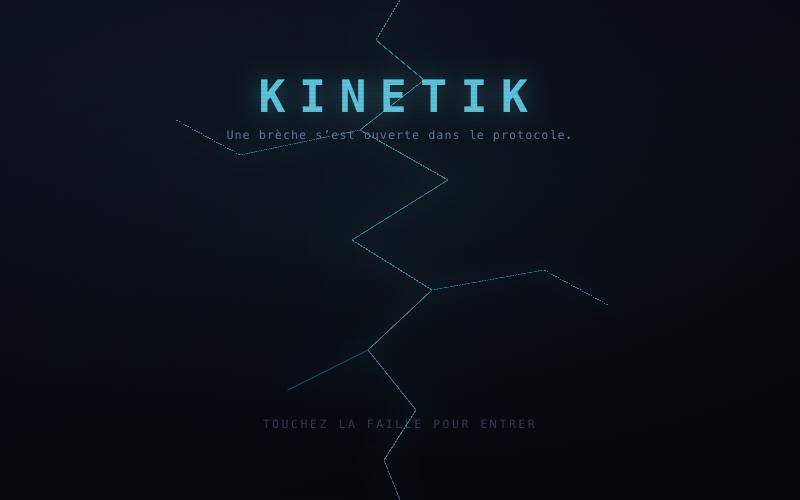
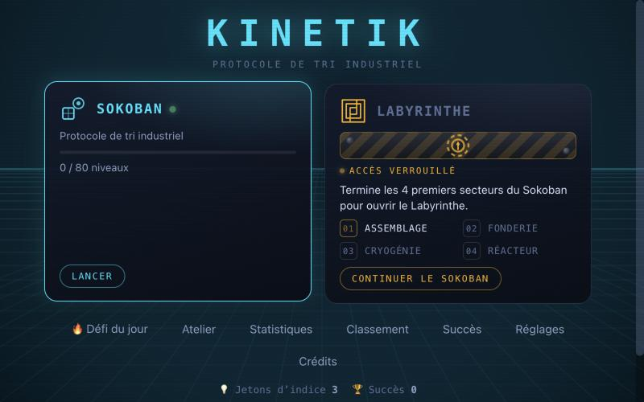
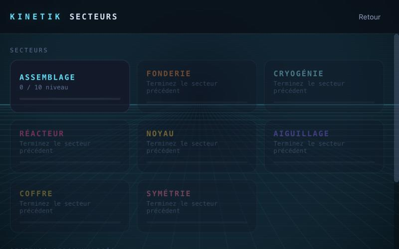
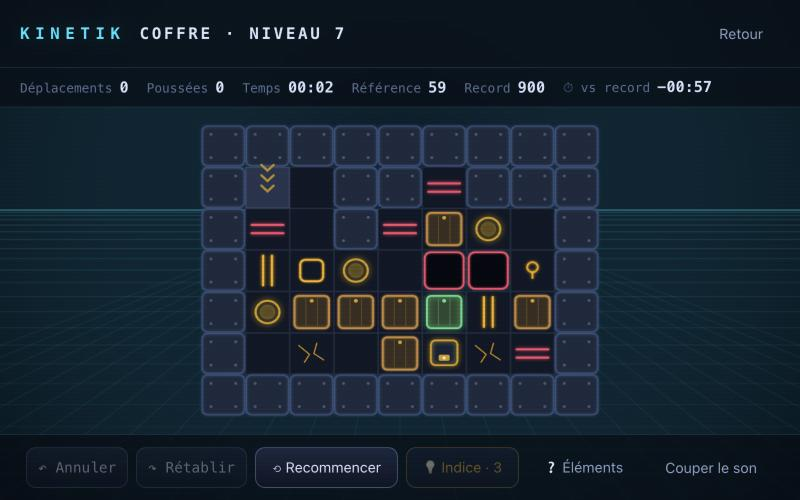
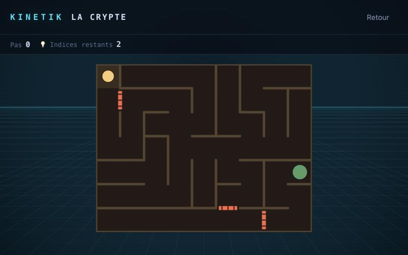
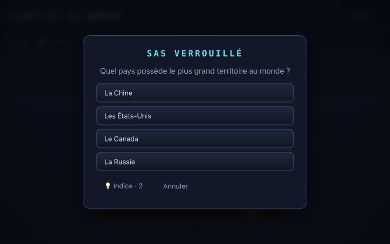

~10 700
lignes de JavaScript côté jeu (65 fichiers)
Un jeu de puzzle pour macOS, Windows et Linux : 80 niveaux de Sokoban, un labyrinthe médiéval à énigmes, un éditeur de niveaux et des classements en ligne sur un serveur que j'héberge moi-même.
Un drone de manutention pousse des conteneurs dans une usine automatisée : 8 secteurs, chacun avec sa mécanique (glace, tapis roulants, téléporteurs, trappes, sens uniques, serrures, caisses jumelles…). Un second mode, le Labyrinthe, mélange exploration dans le brouillard et énigmes de culture générale. Tout est généré ou synthétisé dans le code : aucune image ni fichier audio.
Le jeu se télécharge pour macOS (Apple Silicon et Intel), Windows et Linux depuis les releases GitHub. Le code source est public. Pas encore de démo dans le navigateur. macOS : l'application n'est pas signée, la commande à lancer au premier démarrage est indiquée sur la page de téléchargement.
~10 700
lignes de JavaScript côté jeu (65 fichiers)
571
tests automatisés, dans 29 fichiers
80
niveaux Sokoban + 30 défis du jour
7
chapitres de labyrinthe + mode sans fin
~220
questions écrites + énigmes générées sans limite
4
langues : FR, EN, DE, ES
4
plateformes, 6 installeurs par version
42
commits en 3 semaines (v1.6.1)






Un niveau différent chaque jour, le même pour tout le monde, avec série de jours consécutifs.
Éditeur de niveaux et de secteurs complets : test sur place, export/import par code, publication en ligne.
| Partie | Technologies | Pourquoi |
|---|---|---|
| Jeu | JavaScript (modules ES), HTML5 Canvas 2D, Web Audio API, CSS | Sans framework : graphismes dessinés en code, musique et sons synthétisés en temps réel |
| Build | Vite | Développement rapide, bundle optimisé, build en un seul fichier HTML possible |
| App de bureau | Tauri v2 (Rust) | Installeurs natifs d'environ 1 Mo (contre des dizaines de Mo avec Electron) |
| Serveur en ligne | Node.js, Express, stockage JSON | Classements, secteurs partagés, synchronisation ; limitation de débit |
| Hébergement | Serveur Ubuntu à la maison, Caddy, DuckDNS, systemd | HTTPS automatique (Let's Encrypt), service géré par systemd |
| Tests | Vitest | 571 tests automatisés : règles, solutions des niveaux, indices… |
| CI/CD | GitHub Actions | À chaque version : compilation et publication pour 4 plateformes |
Ce qui rend le projet intéressant à lire côté code.
KINETIK est une réécriture complète, beaucoup plus ambitieuse, d'un projet Sokoban réalisé en équipe en terminale NSI (Trophées NSI 2024) en Python/Tkinter, avec trois camarades.
J'ai développé KINETIK en programmation en binôme avec une IA (Claude). Mon rôle : direction du projet et game design, choix des fonctionnalités, tests de jeu et retours (difficulté, ergonomie, bugs), hébergement et administration du serveur (Ubuntu, Caddy, HTTPS, DuckDNS), gestion des versions et des publications.